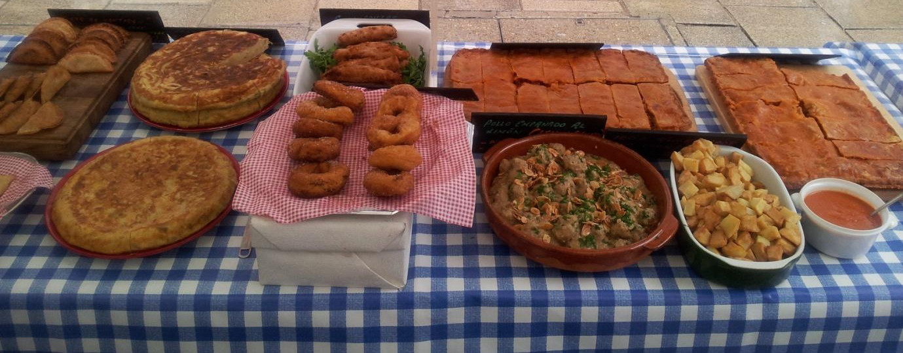

I applied in 2009 and after various telephone interviews and visits to the primrose Hill studio in London with samples of my food, I got in!! It was great fun, although the filming itself was pretty stressful as I was pregnant. Right place wrong time. I met some good and not so good cooks and am certain of two things: one that I love cooking and two that I do not want a career on TV.

When I can fit it in I have a stall on the Winchester Market (http:// www.visitwinchester.co.uk/site/whats-on/markets) I started in September 2011 just for fun. It has been great fun and has also led to some interesting business for La Cala Catering.
I have a Microwave, a griddle a fryer and a slow cooker so I can prepare lovely lunches fro people on the go or provide a delicatessen take-away service for those having dinner parties and wanting to offer something different to their guests. I also have regular customers to whom I deliver fortnightly meals to stock up their freezers.